历史教材（1.0.6）：旧 API 和 VC6 步骤仅供参考，当前开发请阅读新版教程与构建指南。 Current guide
第四章 多重继承
制造一艘小船（ship）和一辆水陆两用车（amphicar）。 （下载源代码）
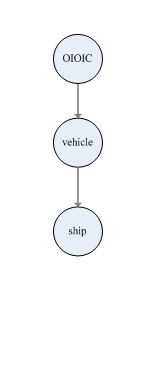

1. vehicle 有重量（weight）属性；（上一章已经实现）
2. car 继承 vehicle 的重量（weight）属性；（上一章已经实现）
3. car 有自己的最大负载量（max_load）和最大速度（max_velocity ）属性；（上一章已经实现）
4. ship 继承 vehicle 的重量（weight）属性；
5. ship 有自己的最大负载量（max_load）和最大速度（max_velocity ）属性；
6. amphicar 继承了 vehicle，car 和 ship 的所有属性；
7. car 的 max_load 是 amphicar 的陆上最大负载量，car 的 max_velocity 是 amphicar 的陆上最大速度；
8. ship 的 max_load 是 amphicar 的水上最大负载量，ship 的 max_velocity 是 amphicar 的水上最大速度。
Step 1: 在 Factory 里分别创建名为 ship 和 amphicar 的 GO 类型节点。

Step 2: 把 ship 和 amphicar 加入 Factory 工程。
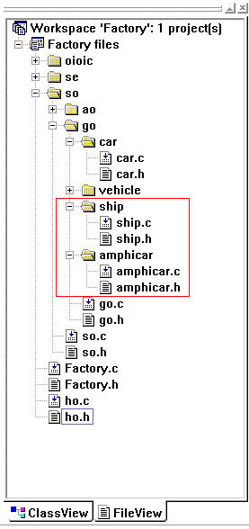
Step 3: 在 ship.h 和 amphicar.h 文件内包含 go.h 头文件：#include "../go.h"。
Step 4: 分别在 ship 和 amphicar 的 <ibn> 标签体里改写它们的 IBN。
改写 ship 的 IBN 为 vehicle。
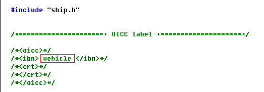
改写 amphicar 的 IBN 为 car 和 ship。
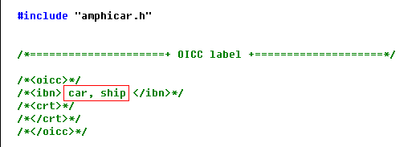
Step 5: 在 ship.h 文件里为 ship 加上两个属性：max_load（最大负载量）和 max_velocity（最大速度）。
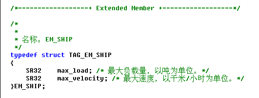
Step 6: 在 ho.h 文件里的 GET_MAXLOAD 和 GET_MAXVELOCITY 后面的注释中注明 “ship”，表示 ship 也使用这两个行为。
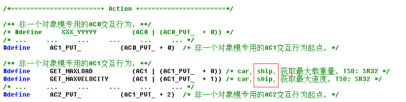
Step 7: 为 ship 实现 GET_MAXLOAD 和 GET_MAXVELOCITY 两个行为。
在 ship.c 文件里找到 ship_Interact1 接口，在其中写上 GET_MAXLOAD 和 GET_MAXVELOCITY 两个行为的实现代码。

Step 8: 在 ho.h 文件里为 ship 和 amphicar 定义 MSN。

Step 9: 在 __CreateObject__ 函数（在 ho.c 文件中）里指明构造 ship 和 amphicar 节点。
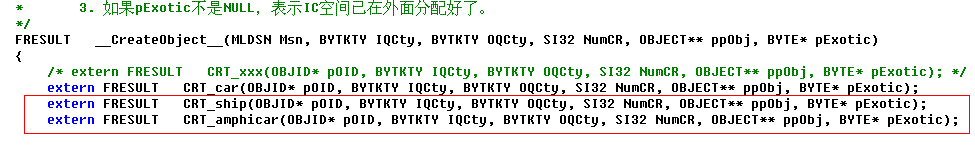
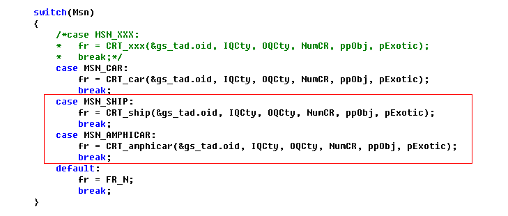
Step 10: 用 oicc 构造 Factory 节点。

ship 和 amphicar 的 CRT 函数已加入各自的 <crt> 标签体中。


Step 11: 分别在 ship.c 和 amphicar.c 文件里包含必要的头文件和向前声明各自的 TOG 函数。
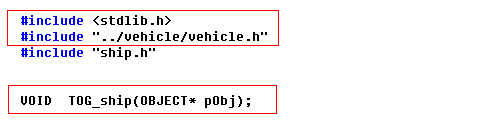
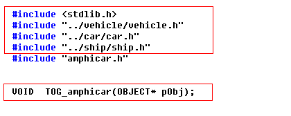
Step 12: 分别在 ship 和 amphicar 的 Open 接口里初始化它们的属性值。
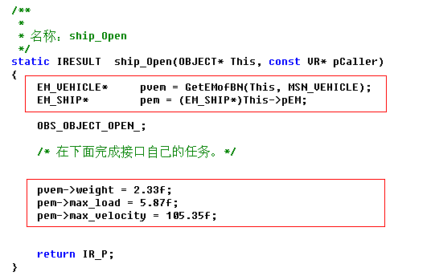

Step 13: 为 amphicar 定义四个 AC1 类型的交互行为。
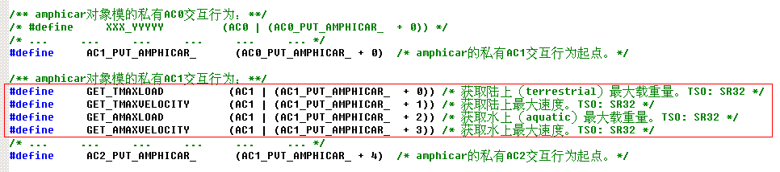
Step 14: 实现 amphicar 的四个 AC1 类型的交互行为。

Step 15: 定义 ship 和 amphicar 的对象指针。
在 ho.c 文件里定义 g_pShip 和 g_pAmphicar 指针变量。

在 main.c 文件里声明这两个变量。
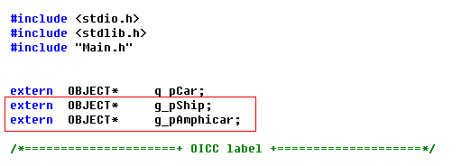
Step 16: 在 Main.c 文件的 Main 函数里添加创建 ship 和 amphicar 对象及输出它们属性值的代码。
1. 添加动态创建 ship 和 amphicar 对象的代码。
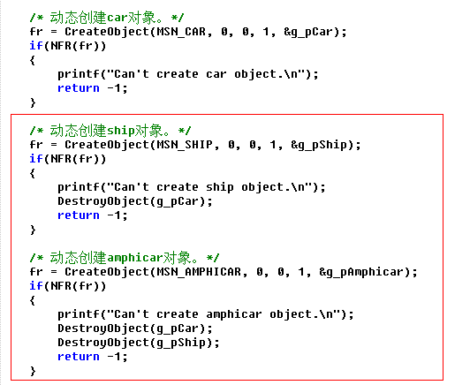
2. 添加打开 ship 和 amphicar 对象的代码。

3. 添加输出 ship 属性值的代码。

4. 添加输出 amphicar 属性值的代码。
添加输出 amphicar 的重量、陆上最大载重量和水上最大载重量的代码。

添加输出 amphicar 的陆上最大速度和水上最大速度的代码。

Step 17: 添加关闭并销毁 ship 和 amphicar 对象的代码。
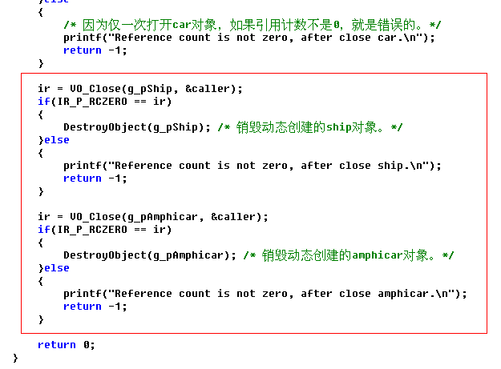
Step 18: 分别在 ship 和 amphicar 的 Close 接口里判断引用计数是否为 0。

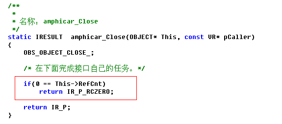
Step 19: 执行程序。

版权©2005-2009 赵平智。保留所有权利。